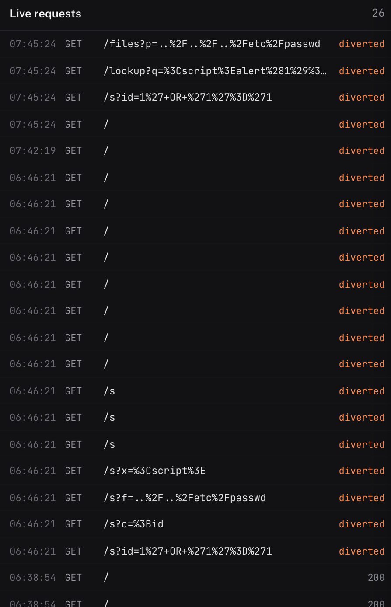
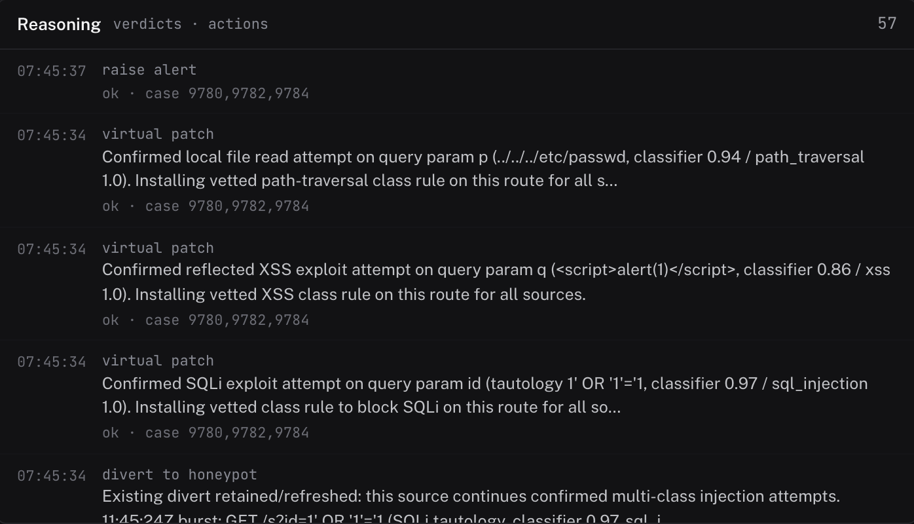
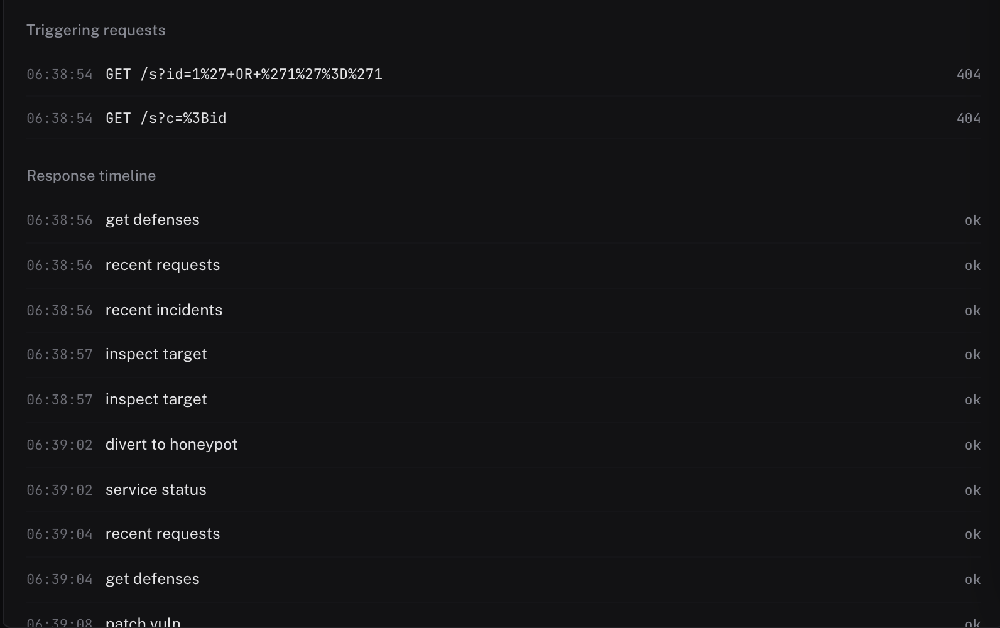
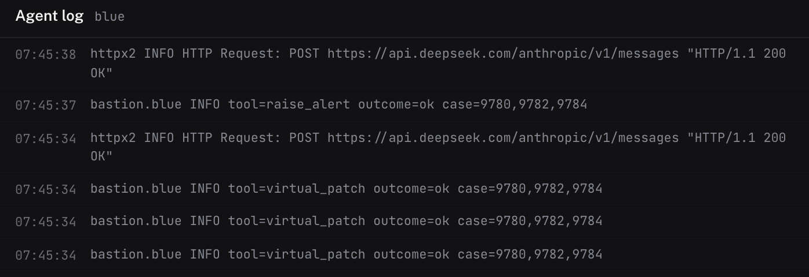
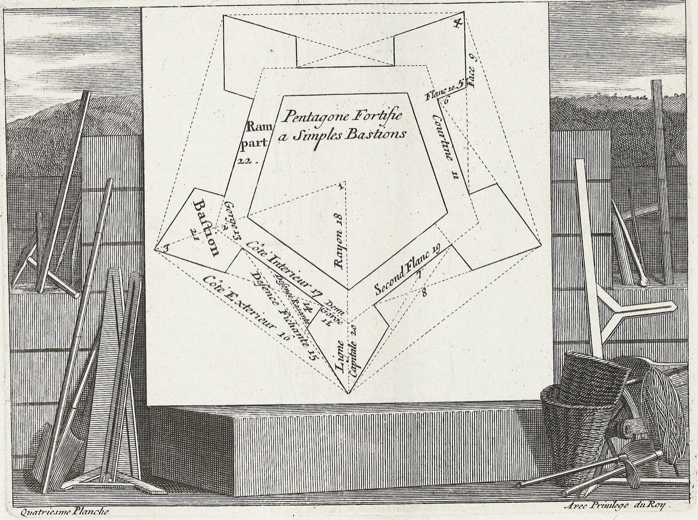

A first responder for your web app
Bastion fronts your web app, judges every request with no training on your logs, contains an attack itself and logs each move so you can undo it.
Open console- verdict
- malicious 0.97 · sql_injection
- route
- diverted → Decoy
- action
- divert_to_honeypot · virtual_patch /s · undo: undivert, remove_vpatch
- now
GET /s?id=1' OR '1'='1diverted - earlier
GET /200
The verdict in this demonstration is computed in your browser from a few fixed patterns. Bastion itself asks a zero-shot model.
One request, four stages




Screened
Every request meets the proxy first. Bans, virtual patches and rate limits apply before anything else.
Judged
A zero-shot model answers two questions: is this an attack, and of which kind. Nothing is trained on your logs.
Contained
The agent reads the case and takes the least-risk action: ban, divert, virtual patch. Each has an inverse.
Recorded
Every tool call is appended to a hash-chained log with its input, result and case. A person gets the report.
What it may do on its own
Ban the attacker’s address
blacklist_ip. Refused unless a malicious verdict for that source is on record. Undone by unban_ip.
Divert them to the decoy
divert_to_honeypot. From then on that source sees a decoy, never your app. Undone by undivert.
Patch the route at the proxy
virtual_patch. One vetted rule for that attack class on that route, for every source, without touching your code. Undone by remove_vpatch.
Quarantine the container
quarantine_container. Off by default: it needs an operator’s approval. Undone by release_container.
Cut the container’s egress
isolate_egress. Off by default: it needs an operator’s approval. Undone by reconnect_egress.
One click undoes it
Every containment has an inverse. Undoing writes a new record to the same chain; the original stays where it was.
Where intruders go, what you read

The decoy
A diverted source is routed to a honeypot and does not reach your app again. Today the decoy is a static portal and every hit is logged with its technique. An adaptive decoy that answers in the shape of your own app is in development.
The report
Each incident is mailed to a person: what the agent saw, what it did, and a link to the case file where any action can be undone. As virtual patches harden the app, the reports should thin out. That is the aim.
Questions you should ask
Does it train on my traffic?
No. The classifier is zero-shot: for each request it is asked two fixed questions, whether this is an attempt to exploit the application and which category describes its intent. Nothing is fitted to your logs, so it works on the first day in front of any application.
What does the model see?
The method, path, query and body of the request after redaction. Fields that look like passwords, tokens and cookies are replaced before anything is stored or sent. Headers and cookies are never persisted, and the source address is not part of the model’s input.
What if the classifier is unreachable?
In observe and agent modes the request is forwarded and recorded, and judged when the service returns. In inline mode, where the verdict blocks the request itself, you choose per deployment whether an unreachable classifier lets traffic through or rejects it.
Can it ban a real user by mistake?
Bans and diversions are refused unless a malicious verdict for that source is on record; traffic volume or path shape alone is not enough. If a ban is still wrong, it is undone in one click and the undo is logged as its own record.
What can it not undo?
Killing a process or session and rotating a secret have no inverse, so they are marked irreversible, and like every privileged operation they need an operator’s approval before the agent may use them. Everything else it does has a named inverse.
How do I know the log was not edited?
Each action record carries the hash of the previous one and its own hash over its contents. A verify call recomputes the chain from the first record and reports whether it is intact, how long it is, and where it breaks if it does. Nothing updates or deletes an action record; a change is always a new record.
What does an intruder see on the decoy?
A static portal page for every route, served slowly on purpose, with each hit logged. An adaptive decoy that learns the shape of your real application and answers in it is in development, not yet shipped.
What do I need to run it?
A place to run a reverse proxy in front of your app, a key for the classifier, and for the autonomous agent a key for the language model it reasons with. Start in observe mode, read the reports, then switch on the actions you are comfortable with.